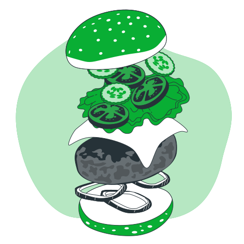

Hamburger
A classic hamburger is a timeless culinary delight that brings together juicy, perfectly seasoned beef patties with the comforting embrace of a toasted bun. Each bite offers a harmonious blend of flavors and textures. Topped with your favorite condiments, this delicious creation is more than just a meal—it's a beloved tradition that evokes warmth, satisfaction, and the simple pleasures of life.

Cheesecake
A easy recipe, perfect for a desert to make lovely memories. Cheesecake is a delightful dessert that primarily consists of a mixture of cream cheese, eggs, and sugar, all resting on a base made from crushed cookies or graham crackers. The texture is rich and creamy, offering a perfect balance of sweetness and tanginess.

Homemade Pizza
Pizza is a popular dish of Italian origin consisting of a flat, round base of dough baked with a variety of toppings. The dish is versatile, enjoyed as a casual meal or at formal gatherings, and has become a global culinary favorite with many regional variations.